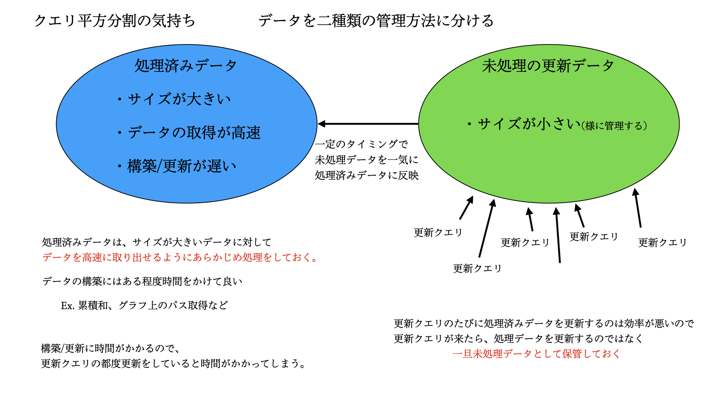
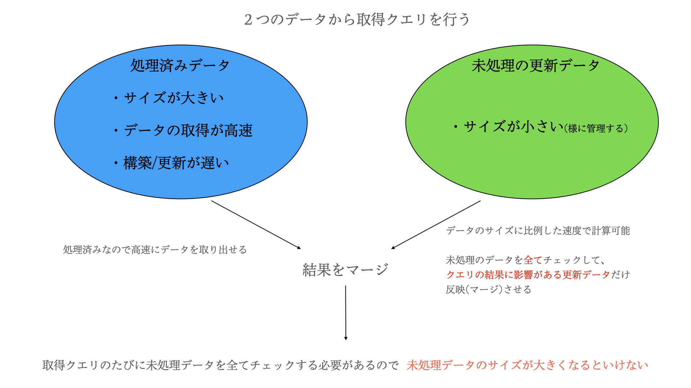
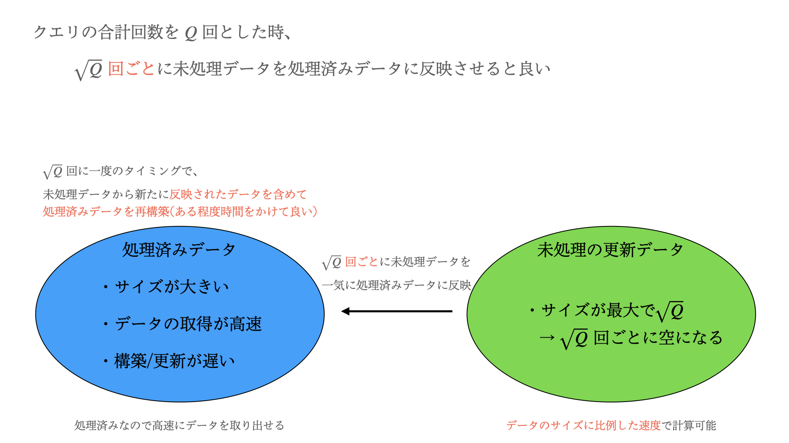
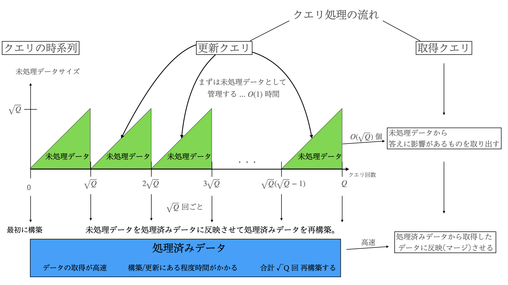

Copyright (c) ©️ 2024 okoteiyu
All Rights Reserved
クエリ平方分割
クエリ平方分割は、クエリ処理問題
使用できる場面は大体以下の場合です。
① : クエリが √Q 回ごとに O( N ) あたりで情報を更新できる
② : 各クエリに答えるとき、最後の①の操作以降のクエリの情報を見ながらクエリの計算ができる
①の操作は、O( N ) の操作を √Q 回行うので、O( N√Q ) です。
②の操作は、最後の①以降のクエリは高々√Q 個であることから、O( Q√Q ) です。




例題として、
こちらの問題
を解きました。以下はソースコードになります。
この問題は、長さ N の数列 A に対して、
取得クエリ : 区間 [x , y] の総 Xor
更新クエリ : A[x] を A[x]^y に置き換える